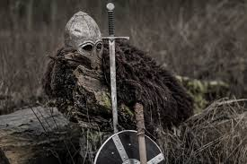

TEMPORADA 5: La serie fue renovada por una cuarta temporada el 4 de mayo de 2012, que se estrenó el 11 de octubre de 2012. Comienza con el conocimiento de que todo está en transición. Elena se enfrenta a su peor pesadilla cuando se despierta después del accidente y descubre que murió con la sangre de Damon en su sistema, que ahora deberá soportar la transición para convertirse en una terrible vampiresa – o enfrentarse a una muerte segura. Stefan y Damon se desgarran aún más por cómo ayudar a Elena, que se tiene que adaptar a una vida que ella nunca quiso, y todo el mundo tiene que hacer frente al caos, más una complicación surgida que deberán resolver por el bien de Elena, Damon y Stefan.La serie fue renovada por una cuarta temporada el 4 de mayo de 2012, que se estrenó el 11 de octubre de 2012. Comienza con el conocimiento de que todo está en transición. Elena se enfrenta a su peor pesadilla cuando se despierta después del accidente y descubre que murió con la sangre de Damon en su sistema, que ahora deberá soportar la transición para convertirse en una terrible vampiresa – o enfrentarse a una muerte segura.
TEMPORADA 6
| TEMPORADA 6 | ||||||||
|---|---|---|---|---|---|---|---|---|
| NACIMIENTO | FALLECIMIENTO | |||||||
960 d. C., Dinamarca |
3 de febrero de 1014, Gainsborough, Reino Unido |
|||||||
Svend I o Svend "Tveskjaeg" Haraldsson rey de Dinamarca, Inglaterra y Noruega. Es apodado por los ingleses como Forkbeard (Barba de horquilla, barba partida o barba hendida) por el inusual mostacho que ostentaba, en nórdico antiguo se le conoce como Sveinn Tjúguskegg, en inglés como Svend Otto Haraldsen, en danés como Svend Tveskæg aunque originalmente como Tjugeskæg ó Tyvskæg y en noruego es llamado Svein Tjugeskjegg. Este gobernante nació posiblemente en el año 960, siendo el mayor de los 4 hijos de Harald Blaatand, rey vikingo de Dinamarca y Noruega, y de su primera esposa Gunhilda. |
Su familia se había convertido al catolicismo para evitar invasiones por parte del Sacro Imperio, pero eso no evito que los obispos alemanes quisiesen aumentar su influencia en Dinamarca, por lo que Svend fortaleció la Iglesia nacional y atacó a los obispos extranjeros, valiéndole las críticas de hereje y pagano (a sabiendas de que su familia practicaba un sincretismo norse-católico iniciado ya con su padre Harald I Dientes Azules). |
En 988 se casó con Swietoslawa de Polonia (que toma el nombre de Gunhilda al casarse), hija del duque Miecislao I y divorciada del rey Erico el Victorioso de Suecia. De este matrimonio nacen 6 hijos:Astrid (llamada también Margarita) (n. 991 - m. ?), casada primero con Ricardo II de Normandía (m. 1027) -el cual la repudió en 1018- y luego con Ulf Thorgilsson, jarl de Dinamarca (m. 1026, asesinado por orden de su cuñado Canuto el Grande); el mayor de los 3 hijos de su segundo enlace, Svend Estridsson Ulfsson será rey de Dinamarca de 1047 a 1076. |
||||||